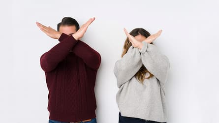

¿QUIENES SOMOS Y POR QUÉ HACEMOS ESTO?
Nos presentamos
Mi nombre es Gracimar. Actualmente me estoy preparando como project manager. También estoy estudiando desarrollo web en paralelo con diseño UX. Poseo un título de Ingeniero Industrial, aunque nunca he ejercido en Argentina. Y, hasta hace poco, me dedicaba a impartir clases en línea de inglés.
Mi nombre es Tamara, me encuentro finalizando la carrera como Técnica en Hemoterapia (salud). En los últimos años me capacité y ejercí en el área de Ecommerce y CM. En mi tiempo libre di talleres sobre abordajes de violencia de género y violencia vicaria, en barrios de la periferia de La Plata. (Me capacité en Promotora territorial de género). Y participo como voluntaria en las Guía-Scout.

Mi nombre es Constanza, tengo 21 años y vivo en Río Grande, Tierra del Fuego. Me egresé de un colegio técnico en informática. Y, actualmente, me encuentro cursando un Profesorado de Educación Secundaria en Geografía.
La violencia nunca es la respuesta correcta. No es correcto destruir lo que otros han construido, no es correcto tomar la vida de alguien que no tenía nada que ver con tus problemas. Barack Obama
¿Por qué hacemos esto?
La violencia es un fenómeno que se manifiesta de maneras muy variadas y en todo el mundo. Estos actos intencionales repercuten en gran medida y de manera negativa en la vida de la persona agredida y provoca consecuencias a largo plazo y lamentablemente, en algunos casos, de por vida.
Desde nuestro lugar, buscamos informar y concientizar a toda la comunidad sobre cómo se manifiesta la violencia que, a veces, suele ser imperceptible para quien lo sufre y, en algunos casos, también para su entorno. Además, brindamos información sobre líneas de ayuda abiertas los 365 días del año, gratuitas y confidenciales. Esperamos que este sitio sea informativo para todos/as y ayude a quienes se encuentran en una situación de violencia.